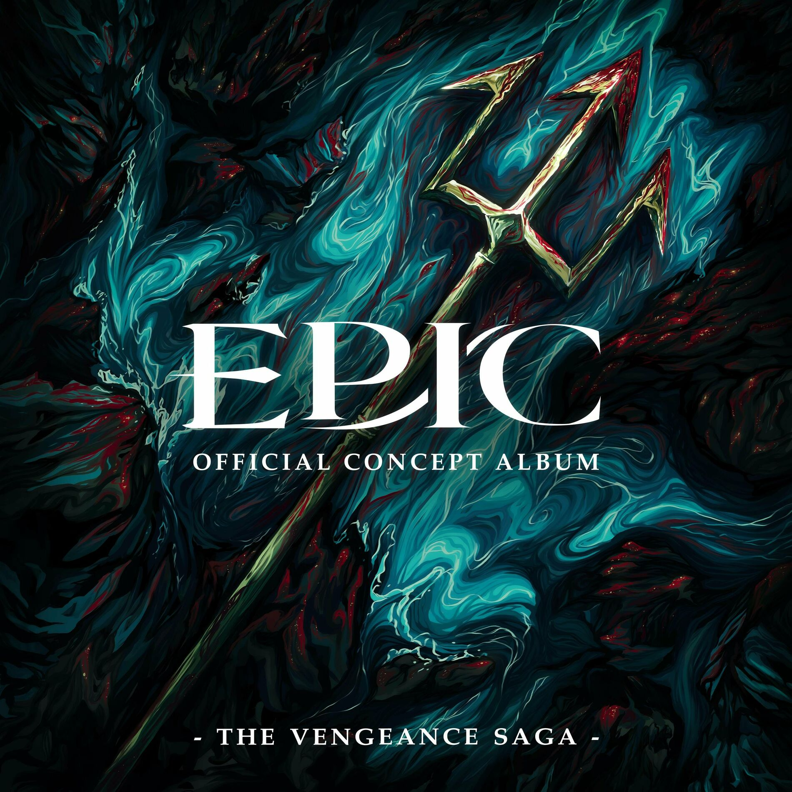

| Gefährlich | |
|---|---|
|  | |
| Song Information | |
| Song Nr. | 32 |
| Akt (Saga) | Akt 2 (Vergeltungs Saga) |
| Gesungen von: | Mike Hinterlechner |
| ... | |
| Charaktere | Odysseus |
| Hermes | |
| Winions | |
| Übersetzt von | Mike Hinterlechner |
| Chronologie | |
| Vorheriger | Mir tut's nicht leid dich zu lieben |
| Nächster: | Charybdis |
Gefährlich
Gefährlich ist der zweite Song der Vergeltungs Saga. In diesem Song gibt Hermes Odysseus Anweisungen um nach Hause zu kommen.
Songtext
| Original Text | Deutscher Text |
|---|---|
|
[ODYSSEUS]
Six hundred men Six hundred deaths under my command 'Cause I had one goal in mind No fleet, no band Only this raft that I made by hand How will I reach my homeland? [HERMES] All you have to do is not open this bag [ODYSSEUS, gesprochen] Hermes? [HERMES, gesprochen] Ahahahahaha, hello old friend [ODYSSEUS, gesprochen] So you're the one who talked to Calypso? Why are you here? [HERMES] You're being given a final option Consider this your one last chance To make it back home and abandon caution Wash it away like the blood your hands have known I know if you dance with fate Then I know, I know you'll enhance your state [ODYSSEUS] If your plan's so great then why'd you wait to say it? [HERMES] Well it's a little bit dangerous, my friend You'll need a mindset change for this You cannot get away with playing safe for this You wanna get home? Put it all on the line And put your whole brain in it Remember every trick in your domain for this You gotta treat it like it is the main event You wanna get home? Put it all on the line Be dangerous [ODYSSEUS] Alright, I'm in, what do I do? [HERMES] First stop, uncharted waters When lost, look towards the sky Follow the north star, no matter how far You think you're going, you keep on rowing When strangers lurk around the isle When danger greets you with a smile Fight your way through, do what you must do But no matter what, keep moving It's gonna be dangerous, my friend You'll need a mindset change for this You cannot get away with playing safe for this You wanna get home? Put it all on the line And put your whole brain in it Remember every trick in your domain for this You gotta treat it like it is the main event You wanna get home? Put it all on the line Be dangerous [HERMES, WINIONS, ALL] And lastly, the wind bag We went through so much to get this Keep this bag closed if you wanna get home, sir You won't get another time to try The raging storm inside won't let you get closer It was meant to stop you by design 'Cause no mortal can pass Poseidon's storm Open this bag, and you'll never make it home You'll never make it home [ODYSSEUS] Don't you know that danger is my friend? My whole life, I've trained for this I cannot tell you how much I have paid for this I have to get home, put it all on the line I'm gonna use ruthlessness Every trick, every skill put to use for this I plan to put an end to all the foolishness I have to get home, put it all on the line I'll be dangerous [ODYSSEUS, gesprochen] Hermes! Thank you [HERMES] Don't thank me, friend I'm not the one who fought for you [ODYSSEUS, gesprochen] Then who? [HERMES, gesprochen] Good luck! |
Trivia
- Es gibt ein besonderes Winion, das in einem der Animatics vorkommt, die Winion Prinzessin, im Original gesungen von Diana Rivera-Herrans, Jorge's Schwester.
- Der Anfang vom Song ist eine Referenz an Volle Kraft vorraus.
- Das Ende vom Song ist eine Referenz an Würd'st du nicht gern.
- Der Song zitiert Halt dir Freunde nah als Hermes Odysseus den Windbeutel bringt.
- Der Windbeutel in dem Song ist der selbe Windbeutel wie in der Ozean Saga
- Jorge bekam die Idee für den Song während einem kreativen Block als er eine farbige Lampe ansah.